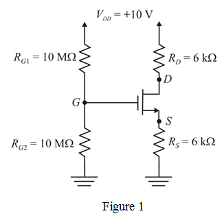

The gate voltage in the circuit is,
Substitute  for
for  ,
,  for , and for
for , and for  in the equation.
in the equation.
The source voltage in the circuit is,
The gate-source voltage,  in the circuit is,
in the circuit is,
…… (1)
Refer to Figure 5.24(a) in the textbook.
Redraw the circuit by representing nodes in the circuit as shown in Figure 1.

The gate voltage in the circuit is,
Substitute for , for , and for in the equation.
The source voltage in the circuit is,
The gate-source voltage, in the circuit is,
…… (1)
Consider that threshold voltage and  are changed.
are changed.
and .
The transistor is in saturation region, since .
Therefore, equation for drain current is,
Substitute for  ,
,  for
for  , and
, and  for
for  in the equation.
in the equation.
Solve the equation to obtain  .
.
and 
Substitute for  in equation (1).
in equation (1).
Substitute for  in equation (1)
in equation (1)
 should be greater than
should be greater than  .
.
Here , therefore and corresponding drain current is 0.39522 mA.
Hence the drain current is,

Therefore, the drain current is, .
Therefore, the drain voltage is, .
Before replacing with another transistor drain current and drain voltage are and  .
.
After replacing with second transistor drain current and drain voltage are  and .
and .
The drain current reduced by .
The percentage change in drain current is,
The drain voltage increased by .
The percentage change in drain voltage is,
.
After changing transistor parameters  and , drain current reduced by
and , drain current reduced by  and drain voltage increased by .
and drain voltage increased by .
Therefore, the circuit is tolerant to changes in device parameters.